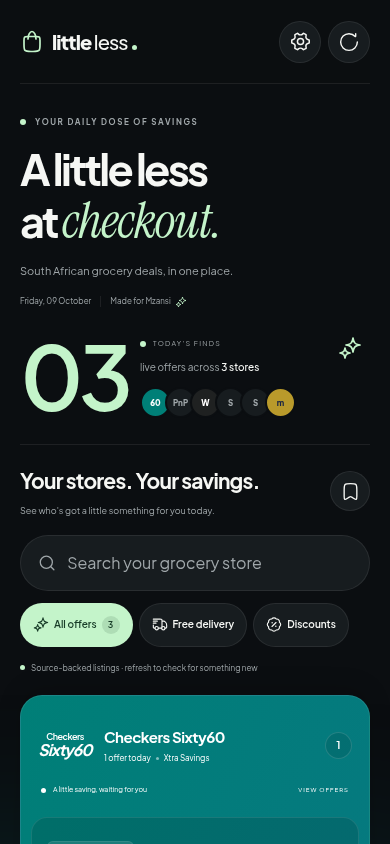
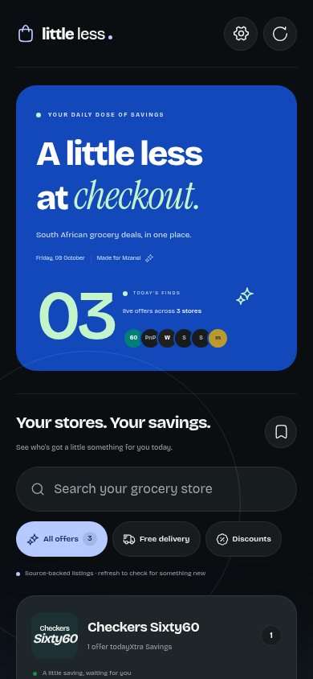
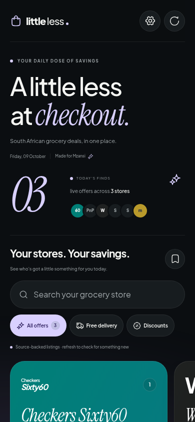

01 · Wallet RECOMMENDED Overlapping store cards. Soft animated ribbons.Closest to the Wallet and card references. 
02 · Rewards A bold blue dashboard. Floating rounded tiles.Inspired by the rewards app reference. 
03 · Orbit Editorial typography. Slowly orbiting rings.Swipe to explore your store cards. 